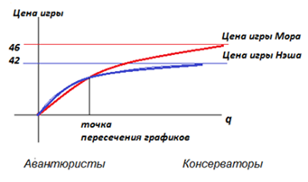
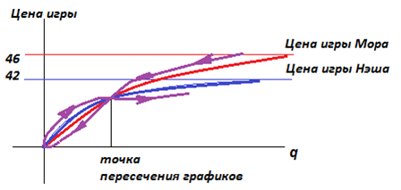
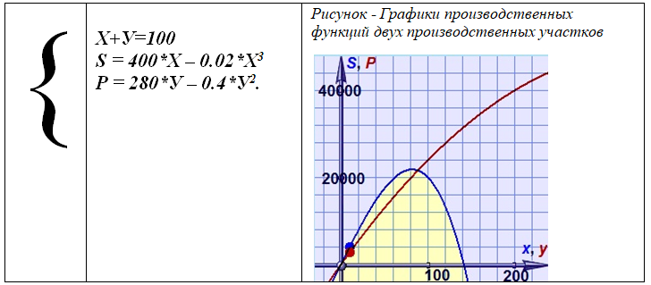
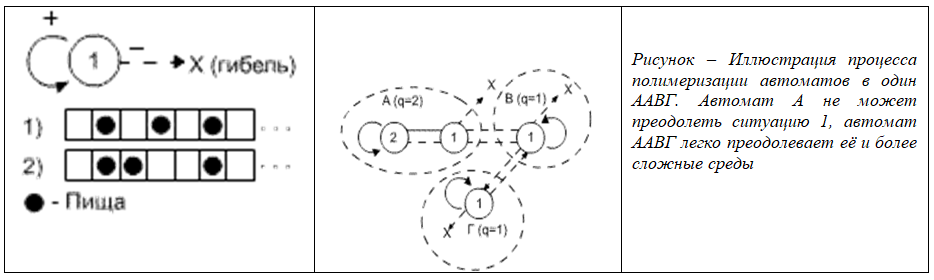

|
Лекция 35.
| ||||||||||||||||||||||||||||||||||||||||||||||||||||||||||||||||||||||||||||||||||||||||||||||||||||||||||||||||||||||||||||||||||||||||||||||||||||||||||||||||||||||||||||||||||||||||||||||||||||||||||||||||||||||
| Умеет готовить | Есть жилплощадь | Варианты поведения при выборе решения Y=F(X1,X2) | ||||
|---|---|---|---|---|---|---|
| X1 | X2 | F1 | F2 | F3 | ... | F4 |
| 0 | 0 | 0 | 0 | 0 | ... | 0 |
| 0 | 0.5 | 0 | 0 | 0 | ... | 1 |
| 0 | 1 | 0 | 0 | 0 | ... | 1 |
| 0.5 | 0 | 0 | 0 | 0 | ... | 1 |
| 0.5 | 0.5 | 0 | 0 | 0.5 | ... | 1 |
| 0.5 | 1 | 0 | 0.5 | 0.5 | ... | 1 |
| 1 | 0 | 0 | 0 | 0 | ... | 1 |
| 1 | 0.5 | 0 | 0.5 | 0.5 | ... | 1 |
| 1 | 1 | 1 | 1 | 1 | ... | 1 |
| Оголтелый пессимист |
… … … | min(x1,x2) | ... | Оголтелый оптимист |
||
Игры автоматов
Рассмотрим поле. Представим себе, что это территория, разделённая на области. Каждый участок территории имеет ресурс, а это позволяет получить населению, живущему на ней, определённый доход.
В разных территориях преобладают различные природные условия, соответственно и предполагается разный общий территориальный доход. Доход обозначен числом.
| 100 | 40 | 40 | 40 | 40 | 40 | ... | 40 |
| 40 | 40 | 40 | 40 | 40 | 40 | ... | 40 |
Рассмотрим население страны – 10 автоматов Цетлина, каждый из которых ведет себя целесообразно. Для начала население распределим по территории случайным образом. Автомат обозначим красным крестиком в клетке.
| 100 xx |
40 | 40 x |
40 | 40 | 40 | ... | 40 |
| 40 xx |
40 xxx |
40 | 40 xx |
40 | 40 | ... | 40 |
Очевидно, что двум автоматам тесно в клетке с доходом 100. Каждый получает по 50. Но они не изменят своё поведение, так как уйти в соседнюю клетку – это означает проиграть. В клетке справа – 40, в клетке снизу - 40/3, в клетке по диагонали – 40/4. Всё гораздо хуже! Уйдя в соседнюю клетку, автомат, так как он способен к целесообразному поведению, будет «наказан» и сменит тактику, вернётся в клетку 100 (иногда не сразу, но рано или поздно).
А вот автоматы, скучившиеся в клетках 40 рано или поздно уйдут в соседние клетки, так как в свободной клетке по 40 гораздо выгоднее существовать, чем в занятой уже кем-то клетке 40, где приходится делить с кем-то ресурсы.
Если подождать некоторое время, то в пределе автоматы распределятся примерно так:
| 100 xx |
40 x |
40 x |
40 x |
40 | 40 | ... | 40 |
| 40 x |
40 x |
40 x |
40 x |
40 x |
40 | ... | 40 |
И это будет устойчивое состояние!!! Оно будет существовать сколь угодно долго (разумеется с небольшими флуктуациями, но которые всё равно будут возвращаться к устойчивому состоянию).
Автомату из клетки 100 не выгодно уходить с 50 на 40. В занятую клетку 40 никто не придёт вторым, так как есть много пустых клеток по 40, а делить 40 на двоих или троих невыгодно. В клетку 100 то же никто не придёт третьим, так как в этом случае с 40 надо будет перейти на доход 100/3=33, что невыгодно. Невыгоден третий и старожилам клетки 100, так как с дохода 100/2=50 они будут вынуждены перейти на 100/3=33. Кто-то третий всё равно покинет богатую клетку, поскольку есть клетки по 40.
Такая устойчивая игра называется игрой Нэша. Валовый продукт, который получит страна в этом случае, составит: 50*2+40*8=420. Цена игры Нэша (средняя заработная плата населения) равна 420/10=42.
Существуют и другие игры. Например, ,игра Мора.
| 100 x |
40 x |
40 x |
40 x |
40 x |
40 | ... | 40 |
| 40 x |
40 x |
40 x |
40 x |
40 x |
40 | ... | 40 |
Но эта игра неустойчивая! Так как один автомат будет получать 100, а другие по 40, то рано или поздно какой-то автомат перейдет (пусть случайно) в клетку с 100. Это даст ему выигрыш на 10 больше, чем в клетке 40, так как после перехода он получит 50, разделив 100 на двоих. Бывшему там ранее автомату, конечно, не выгоден такой переход (со 100 его доход меняется на 50), и он может уйти в другие клетки (восприняв понижение дохода как наказание), но всё равно вернется в эту клетку 100, так как 50 лучше, чем 40 или менее того.
Однако подсчитаем всё-таки цену игры Мора, допустив, что как-то распределение, показанное на рисунке, сохранится, хотя оно и неустойчивое. Валовый доход, который получит страна в этом случае, составит: 1*100+9*40**=460. Цена игры Мора (средняя заработная плата) равна 460/10=46.
Вывод: цена игры Мора (46) выше цены игры Нэша (42). В игру Мора играть выгоднее, но она неустойчива.
Возникает вопрос: можно ли все-таки сыграть в игру Мора, сделав её устойчивой?
Да! Такая игра называется игрой Мора с общей кассой. Для этого каждому автомату ежемесячно, получив доход со своего участка, необходимо высылать весь его в центр. Центр, собрав всю сумму по стране, делит её на всё население поровну. И высылает эту долю суммы в регион: по 46 каждому.
Теперь условие устойчивости выполнено. Каждый получает по 46 и лезть к соседу не имеет смысла. Более того, если автомат по случайности залезет в соседнюю клетку, то доход там разделится на двоих. Общий валовый доход страны упадёт: 1*100+220+**740=420 и после трансфертов каждый житель страны получит не 46, как ранее, а по 42. Таким образом автомат (и остальные автоматы тоже!) получит наказание в виде уменьшения суммы на 10% и начнёт возвращать утраченное состояние. Вполне возможно, что другие автоматы тоже, почувствовав наказание, начнут менять своё состояние. Население в любом случае задвигается и восстановит прежнее устойчивое распределение: 1*100+940**=460* и прежнюю цену игры - 46.
Вывод: можно сделать выгодную игру Мора устойчивой, если усовершенствовать её механизмом общей кассы. Игра Нэша имитирует личные интересы, а игра Мора – общественные. Механизм перераспределения доходов называется налогом.
Обратите внимание!!! Кто-то, зарабатывая 100, получает 46. А некто, зарабатывая 40, получает 46. На лицо – неравенство, но … неравенство в индивидуальной оплате эквивалентно выгоде общего интереса, так как общество в целом выигрывает, цена игры Мора выше цены игры Нэша. Налоги в стране являются стабилизатором общественного устройства. Налоги повышают общий эффект в стране (при консервативном варианте поведения).
Платя налоги, и общество выигрывает, и каждый (почти) его член. Кроме того, страна остаётся стабильной. Стабильность игры тем выше, чем меньше автоматы дёргаются. Если они, найдя лучшее состояние, не стремятся его менять (консервативны, обладаю большим значением q), то страна и её жители постоянно выигрывают. Если среди автоматов находится авантюрист, который всё время дёргается и заставляет дёргаться снова и снова других в поисках нового выгодного состояния, страна во время поисков теряет.
Однако, если ситуация в стране меняется, меняются цены регионов, то авантюрные поиски полезны, они переводят страну в новое лучшее состояние.
Конечно, больший налог платит тот, кто больше получает. Автомат в клетке 100 уплачивает 54 единицы налога, так как «туда» посылает 100, а «оттуда» получает 46. Остальные дотируются по +6 единиц. Условно говоря, проигравший один, а выигравших - много. Естественно, такой автомат часто предпринимает меры по сокрытию своих налогов, переводу доходов в закрытые зоны, фонды, формы. Поэтому общество должно строго следить за выполнением правил игры, обеспечивая свою стабильность и эффективность игры Мора. Нарушение правил для страны – смерти подобно. Тем более, что находится автомат на богатой территории или на бедной – есть игра случая. В качестве компенсации в конце концов для удовлетворения амбиций «обиженного» следует давать ему небольшой добавочный процент по отношению к средней зарплате.
Всё, конечно, сильно зависит от глубины q автомата. М.Л. Цетлин снял зависимость, показывающую цену игры от величины q, которая связывается с темпераментом (шкала «авантюризм – консерватизм»).

Чем более целесообразно ведёт себя автомат, тем более выгодно ему играть в игру Мора с общей кассой (социализм). Чем более консервативен автомат, тем более выгодна ему игра Мора.
М.Л. Цетлин называл этот эффект - «выигрыш социалистического общества при высоком уровне сознательности его членов». Совместное принятие решений, уважение и координация реализуют более выгодные стратегии для общества в целом, позволяя оптимально распределять производительные силы общества в борьбе с природой.
В этом выигрыше (в нашем примере 46-42=4, то есть 10% ВВП), кстати, находятся излишки, которые мы можем себе представить, как запасы общества для гашения последствий экстремальных ситуаций. Но если эгоистичные действия элит преобладают над общественными интересами, то страна деградирует, сползает с наилучшей точки цены Мора. Общество «падает», часто не понимая, что с ним происходит, и кто виноват.
Интересно отметить, что при консервативном поведении общества в целом выигрыш в игре Мора выше – красная линия на графике выше синей линии. Однако есть точка пересечения графиков, после которой с понижением глубины автоматов выгоднее становится играть в игру Нэша. В любом случае социализм – это сознательность. Если сознательность низкая, – то цена игры Мора снижается и может оказаться даже ниже игры Нэша. При низкой сознательности выгоднее играть в игру Нэша. Но при высокой сознательности (консерватизме) цена игры Мора выше цены игры Нэша.
Сознательность сдерживает автоматы от авантюристических поступков. Хотя есть и другие механизмы закрепления населения в своих ячейках (прописка, концлагерь, цифровые деньги, искусственное изъятие дохода у общественной массы посредством инфляции, чрезмерные траты ресурсов на общественную инфраструктуру без должной её отдачи, девальвации денежной единицы и так далее).
Капитализм, как стратегия индивидуализма, ярко играет на личных интересах, но проигрывает в тот момент, когда требуется напряжение всех сил общества в борьбе с глобальной опасностью. Авантюрист легче ищет новые ниши, однако, чаще погибает. («Седых брокеров не бывает» Насим Талеб). Но, как ранее было отмечено, при частом изменении правил среды выгоднее авантюрное поведение, так как оно позволяет уловить новые ранее неизвестные возможности. Открывают возможности авантюристы, а наиболее полно пользуются ими консерваторы.
Требуется отметить, что модель демонстрирует нам ещё и эффекты второго порядка. Например, при игре Мора с общей кассой (социализм) один из автоматов может вовсе перестать вносить в кассу какой-либо доход (не работать), но получать доход (незаслуженную зарплату) из центра. Общество, потеряв один из источников дохода, проигрывает:1*100+8*40+1*0=420. Цена игры становится 420/10=42 вместо 46.
В этом случае ситуация лично выгодна самому автомату, так как, затрачивая 0, он получает 42. Конечно, раньше он получал 46, сейчас - 42, налицо снижение дохода. Но рентабельность при такой игре бесконечна, как бесконечно значение частного после деления делимого на ноль.
Общество после потери доходов своего члена слегка деградирует – точка сползает по красному графику влево вниз, приближаясь к синему уровню цены Нэша. После этого ещё один член социалистического общества замечает, что «не работать» выгодно. Личные интересы начинают преобладать над общественными. Общество разваливается, если не принимает мер против саботажников. Обычно за счёт информационного взаимодействия и отрицательного примера такая ситуация нарастает лавинообразно. И рабочая точка начинает с ускорением двигаться влево вниз (работает положительная обратная связь). Ситуация становится неустойчивой, если элиты её не остановят. (Чаще всего именно они, обиженные клеткой 100 и трансфертом 56, подталкивают общество к разрушению, не понимая последствий лично для них. В элитной среде считается, что на их век хватит. Однако, элиты всегда недоучитывают эффект лавины, которую нельзя остановить).
Общество может даже проскочить точку пересечения кривых Нэша и Мора на графике, дойдя до нуля! После этого возникает перестройка общества на новый тип сознания (авантюристический) и новый тип игры (Нэша). И общество начинает двигаться вправо вверх по синей линии, так как эта тактика более выгодна при низких уровнях q (синий график выше красного), а игра устойчива. Общество делает в своём развитии петлю.

Лавину, не доводя до петли, можно остановить в районе точки пересечения, если вводить в общество элементы пропаганды, воспитания или народного капитализма (как это, к примеру, делалось в Китае, во Вьетнаме, в Югославии). Однако лучше ситуацию вовсе не допускать до сползания, вовремя останавливая процесс саботажа общественных интересов со стороны отдельных членов общества, волей судеб получающих высокие вознаграждения (авторские за публичные произведения, доступ к управлению финансовыми потоками, передача нажитого по наследству, земельная рента и рента на полезные ископаемые, доступ к управлению сетевыми информационными ресурсами).
Пример. При управлении предприятиями используется производственная функция, которая показывает выручку предприятия в зависимости от существенных переменных его деятельности.
Примем к рассмотрению два лесозаготовительных участка (2 клетки страны) с населением 100 рабочих. Рабочих можно распределять по участкам: на первый – Х рабочих, на второй – У рабочих. То есть, имеем первое уравнение: Х+У=100.
Зарплата на первом участке формируется как S=400Х-0.02Х3. Смысл уравнения: на первом участке растут толстые деревья, которые находятся на нормальном расстоянии друг от друга, лес не требует предварительной расчистки, каждый рабочий, свалив дерево, хорошо зарабатывает, зарплата 400. Однако, рабочие мешают друг другу (надо соблюдать правила техники безопасности), поэтому надо отходить друг от друга подальше, теряя рабочее время, в поисках нового дерева. Появляется отрицательное слагаемое, символизирующее затраты, Х3 с небольшим коэффициентом 0.02. Переход «подальше» требует усилий – глубокий снег, перенос бензопилы – поэтому функция при увеличении Х быстро нарастает (в кубе).
Зарплата на втором участке формируется как Р=280*У-0.4*У2. Смысл уравнения: на втором участке растут более тонкие деревья, которые находятся на небольших расстояниях друг от друга, лес требует предварительной расчистки, каждый рабочий, свалив дерево, зарабатывает только 280. Рабочие тоже мешают друг другу, но удар от тонкого дерева менее болезненный. Появляется медленно растущее слагаемое Y2, но с большим коэффициентом 0.4.
Итак, имеем систему трех уравнений. Построим функции S(X) и P(Y), чтобы понять их «физический» смысл.

Распределить рабочих по участкам {X,Y} можно по-разному, используя разные стратегии.
- S=P. Крайний Север и Дальний Восток должны быть развиты одинаково, как и Центр России. Везде живут наши люди и имеют одинаковое право на горячую воду, газ, театры, фрукты.
- S/X=P/Y. Важно, чтобы зарплаты везде были одинаковы. Люди не виноваты, что в Твери нет нефти… Страна у нас единая, все равны. Бросать Дальний Восток тоже плохо, не в Москве же всем жить
- S+P->max. (S+P)/(X+Y). Главное, каждому работать изо всех сил на своём месте, каждый даст стране всё, что может. А потом разделим всё суммарное богатство на всех поровну.
- X=У.Главное, не наступать друг другу на ноги, равномерно расселиться по всей стране, осваивая максимально все её богатства.
- X*S>Y*P. Большинство людей живёт лучше меньшинства. Диктатура большинства.
Вариант 1: людей Х, получающих более высокую зарплату, чем у людей Y, больше.
Вариант 2: денежная масса первого класса больше денежной массы второго класса.
Вариант 3: людей на богатом участке больше, чем людей на бедном участке.
Как видите, это разные стратегии развития страны. Все хорошие. Решите 5 раз задачу с тремя уравнениями, дополнив их каждый раз одним из уравнений (стратегией).
Примечание: как видите, мы строим с Вами модели и ищем среди них наилучшие, пока, правда, вручную.
Задания
- Найдите значения решения (Х,У) в каждом случае и заполните таблицу. Найдите зарплату на каждом участке, общий доход страны, среднюю зарплату по стране, сколько
надо заплатить от одного участка другому, чтобы рабочие не бегали с одного участка на другой за более высокой зарплатой.
Х – население первого участка, чел.
S - фонд заработной платы на первом участке, руб.
S/X – средняя зарплата на первом участке, руб.
Y – население на втором участке, чел.
P - фонд заработной платы на втором участке, руб.
P/Y – средняя зарплата на втором участке, руб.
N=|S-P| - неравенство развития регионов
Z=|S/X - P/Y| – неравенство зарплат в регионах
S+P – доход страны
(S+P)/(X+Y) – средняя зарплата по стране
Таблица – Варианты применения стратегий Вариант Х Y S P N S/X Р/Y Z S+P (S+P)/(X+Y) Равенство развития территорий Равенство зарплат на территориях Максимальная сумма произведенных товаров в стране Равномерное распределение населения по территории Большинство людей живет лучше меньшинства
В каждой строке таблицы сделайте вывод: отметьте достоинства и недостатки стратегии.
Обратите внимание на то, что невозможно совместить несколько решений в одну стратегию. Решения разные и придётся выбирать.
Обратите внимание: решение поменяется, если изменить числовые параметры функций. А если поменять вид функций – вообще может поменяться все, не только количественно, но и качественно. В странах с различной территорией, различным населением, различными природными условиями производственные функции различны. Значит, в различных странах решения могут кардинально отличаться друг от друга. Итог также зависит от состояния населения (q) и целей (критерия жизнедеятельности) общества.
Подумайте, как могут выглядеть производственные функции для коллективной охоты на крупного зверя, сбора артелью диких грибов в лесу, сельскохозяйственной фермы, рыболовецкой артели.
В игру можно вносить дополнительные условия. Например, запустить эволюцию автоматов. При встрече автоматы объединяются: их глубины q численно складываются, а лепестки добавляются. Приспособленность к деятельности у автомата в результате может улучшиться, появляется ресурс для оптимальной настройки на среду. Например, АЛТ(1,1) слабо приспособлен к сложной среде, но после полимеризации у автоматов растёт глубина и количество действий.

Презентация:
| Лекция 34. Автоматы Цетлина | Лекция 36. Перспективы развития цивилизации. Обобщение | ||||||||||||||||
|
|||||||||||||||||